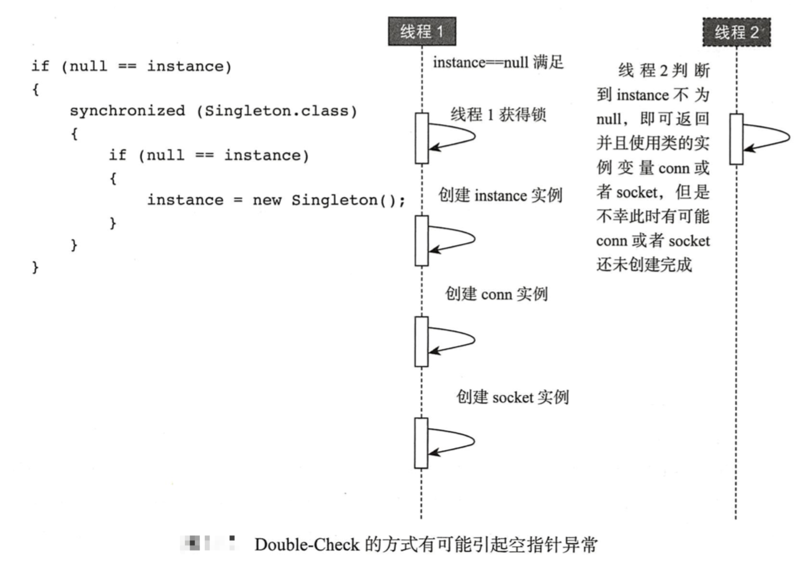

[TOC]
单例模式
- 单例类只能有一个实例
- 单例类必须自己创建自己的唯一实例
单例类必须给所有其他对象提供这一实例
懒汉：在初始化类的时候，不创建唯一的实例，而是等到真正需要用到的时候才创建。必须加上同步，否则有可能依然创建多个实例。
饿汉：在初始化的时候，就创建了唯一的实例，不管是否需要用到。不需要自己加同步，一定产生唯一的实例。
懒汉式 + 非同步
final class Singleton{
private byte[] data = new byte[1024];
private static Singleton instance = null;
public static Singleton getInstance(){
if (null == instance) {
System.out.println("new Singleton()");
instance = new Singleton();
}
return instance;
}
}
Singleton.class初始化的时候，instance不会实例化，getInstance()方法内部会实例化，但是多线程下会出现new Singleton()多次的情况，因为某个时间可能多个线程看到的instance都是null, 这使得实例并不唯一
// 20个线程简单测试
for(int i=0;i<20;i++){
new Thread(()-> Singleton.getInstance()).start();
}
懒汉式 + synchronized同步
getInstance同一时刻只能被一个线程访问，效率很低
final class Singleton{
private byte[] data = new byte[1024];
private static Singleton instance = null;
public static synchronized Singleton getInstance(){
if(null == instance){
System.out.println("new Singleton");
instance = new Singleton();
}
return instance;
}
}
double-check（仍然线程不安全）
首次初始化的时候加锁，之后多线程调用getInstance
final class Singleton{
private byte[] data = new byte[1024];
private static Singleton instance = null;
String conn;
Socket socket;
private Singleton(){
System.out.println("Singleton constructor init");
try {
TimeUnit.SECONDS.sleep(2);
}catch (Exception e){
e.printStackTrace();
}
this.conn = new String();
this.socket = new Socket();
}
public static Singleton getInstance(){
if(null == instance){
synchronized (Singleton.class) {
if(null == instance) {
System.out.println("new Singleton");
instance = new Singleton(); // new 对象 可能会指令重排
}
}
}
return instance;
}
}

创建一个变量需要：一个是申请一块内存，调用构造方法进行初始化操作，另一个是分配一个指针指向这块内存。这两个操作谁在前,谁在后呢？JVM规范并没有规定。那么就存在这么一种情况，JVM是先开辟出一块内存，然后把指针指向这块内存，最后调用构造方法进行初始化。
double-check & volatile（懒汉式）
volatile止指令重排，保证顺序性
private volatile static Singleton instance = null;
Holder方式（静态内部类：线程安全 & 懒汉式）
final class Singleton{
private Singleton(){
}
private static class Holder{
private static Singleton singleton = new Singleton();
}
public static Singleton getInstance(){
return Holder.singleton;
}
}
回顾:什么时候需要对类进行初始化
- 使用
new该类实例化对象的时候 - 读取或设置
类静态字段的时候（但被final修饰的字段，在编译器时就被放入常量池(static final)的静态字段除外） - 调用
类静态方法的时候 - 使用反射
Class.forName("xxx")对类进行反射调用的时候，该类需要初始化； - 初始化一个类的时候，有父类，
先初始化父类（注：1. 接口除外，父接口在调用的时候才会被初始化；2.子类引用父类静态字段，只会引发父类初始化）； - 被标明为启动类的类（即包含
main()方法的类）要初始化； - 当使用JDK1.7的动态语言支持时，如果一个
java.invoke.MethodHandle实例最后的解析结果REF_getStatic、REF_putStatic、REF_invokeStatic的方法句柄，并且这个方法句柄所对应的类没有进行过初始化，则需要先触发其初始化。
以上情况称为对一个类进行主动引用，且有且只要以上几种情况是需要对类进行初始化：
所有类变量初始化语句和静态代码块都会在编译时被前端编译器放在收集器里头，存放到一个特殊的方法中，这个方法就是
<clinit>方法，即类/接口初始化方法，该方法只能在类加载的过程中由JVM调用；编译器收集的顺序是由语句在源文件中出现的顺序所决定的，静态语句块中只能访问到定义在静态语句块之前的变量；
如果超类还没有被初始化，那么优先对超类初始化，但在
<clinit>方法内部不会显示调用超类的<clinit>方法，由JVM负责保证一个类的<clinit>方法执行之前，它的超类<clinit>方法已经被执行。JVM必须确保一个类在初始化的过程中，如果是多线程需要同时初始化它，仅仅只能允许其中一个线程对其执行初始化操作，其余线程必须等待，只有在活动线程执行完对类的初始化操作之后，才会通知正在等待的其他线程。(所以可以利用静态内部类实现线程安全的单例模式)
如果一个类没有声明任何的类变量，也没有静态代码块，那么可以没有类
<clinit>方法；
说明
Singleton初始化的时候不会创建Holder实例；
当调用
getInstance时，才会初始化Holder实例；而在Java程序类加载的编译时期<clinit>()方法中，该方法是一个同步方法；类里面的静态变量是初始化一次放在常量池中的
枚举
枚举类型不允许被继承，同样是线程安全的且只能被实例化一次，但是枚举类型不能够实现懒加载